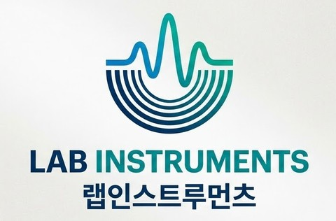

랩인스트루먼츠는 범용 장비로 측정하기 어려운 생체신호·전자기 신호를 위한 맞춤형 계측 기기와 소프트웨어를 설계·제작하고, 대학 및 기업 연구진에게 엔지니어링 기술 자문을 제공합니다. LAB INSTRUMENTS designs and builds custom instrumentation and software for biosignal and electromagnetic measurements that off-the-shelf equipment can't handle, and provides engineering consulting to university and industry research teams.
랩인스트루먼츠는 대학 전자전기공학 연구실에서 쌓아온 생체 계측·신호 처리 하드웨어·소프트웨어 노하우를 바탕으로 설립된 정밀 계측 엔지니어링 회사입니다. 표준 장비로는 해결하기 어려운 특수 목적 계측 문제를 대학 연구실, 기업 R&D 부서와 함께 해결합니다. LAB INSTRUMENTS is a precision instrumentation engineering company built on decades of hardware and software expertise in biosignal measurement and signal processing developed within a university electronic engineering research lab. We work alongside university labs and corporate R&D teams to solve special-purpose measurement problems that standard equipment can't address.
한경국립대학교 전자전기공학부 교수(2015년~현재)로, 안구운동 계측, 비침습 생체신호 계측·분석, 인간-컴퓨터 상호작용(HCI)을 연구해왔습니다. 연세대학교 의공학 연구조교(1994~1998)로 경력을 시작해 Rensselaer Polytechnic Institute 박사후연구원, Johns Hopkins University 신경과학연구실 방문학자를 거쳤으며, 한경국립대학교에서 강사·조교수·부교수(2004~2015)를 거쳐 2015년 교수로 임용되었습니다. 한국한의학연구원 겸임연구원(2015~2020)과 라이프사이언스테크놀로지 기술이사(CTO, 2023~2025)를 겸직한 바 있습니다. Professor at the School of Electronic & Electrical Engineering, Hankyong National University (since 2015), researching eye-movement measurement, non-invasive biosignal measurement/analysis, and human-computer interaction. His career began as a Research Assistant in Medical Engineering at Yonsei University (1994–1998), followed by a Postdoctoral Fellowship at Rensselaer Polytechnic Institute and a Visiting Scholar appointment at the Johns Hopkins University Neuroscience Lab, then Lecturer, Assistant, and Associate Professor at Hankyong National University (2004–2015) before becoming Professor in 2015. He also served concurrently as an Adjunct Researcher at the Korea Institute of Oriental Medicine (2015–2020) and as CTO of Life Science Technology (2023–2025).
계측 기기 설계부터 소프트웨어, 기술 자문까지 하나의 팀이 함께합니다.From instrument design to software and technical advisory, one team sees it through.
범용 장비로 측정하기 어려운 생체신호 계측 모듈, 전자기 측정·시험 및 분석 기구를 맞춤 개발·제작합니다. We custom-develop biosignal acquisition modules and electromagnetic measurement/test instruments that go beyond off-the-shelf equipment.
하드웨어(회로·임베디드) 및 시스템 최적화 기술 자문, 신호처리 알고리즘 자문을 제공합니다. Technical advisory on circuit and embedded hardware, system optimization, and signal-processing algorithms.
계측 데이터 수집·분석용 응용 소프트웨어, GUI 모니터링 프로그램, 연구용 통합 플랫폼을 구축합니다. We build data acquisition/analysis applications, GUI monitoring tools, and integrated research platforms.
대학 및 기업 연구 과제와 연계한 프로토타입 제작 지원과 실험 검증 자문을 제공합니다. Prototype support and experimental-validation advisory tied to university and corporate research projects.
랩인스트루먼츠의 역량이 적용되는 대표적인 개발 분야입니다.Representative domains where our engineering work is applied.
연구 목적에 맞춘 아날로그 프론트엔드와 신호 조절 회로 설계Analog front-end and signal-conditioning design tailored to a specific research need
MCU 기반 실시간 데이터 수집 및 제어 펌웨어 개발MCU-based real-time data acquisition and control firmware
데이터 시각화와 실험 자동화를 위한 모니터링 프로그램Monitoring applications for data visualization and experiment automation
세포·조직 대상 2mT 세기의 펄스 전자기장(PEMF) 자극 장치를 개발 중이며, 줄기세포 분화·신경재생·유전자 발현 제어 등 전자기장 응용 연구에 활용됩니다. Developing a 2 mT pulsed electromagnetic field (PEMF) stimulation device for cell and tissue studies, supporting research in stem-cell differentiation, nerve regeneration, and gene-expression control.
계측 장비 개발이나 기술 자문이 필요하다면 편하게 연락해 주세요.Reach out if you need custom instrumentation or engineering advisory.
측정하려는 신호, 필요한 정확도, 원하는 인터페이스를 간단히 알려주시면 검토 후 이메일로 연락드립니다.Tell us what you need to measure, the accuracy required, and the interface you have in mind — we'll follow up by email after reviewing it.
또는 이메일로 바로 문의: sckim@hknu.ac.krOr email us directly: sckim@hknu.ac.kr